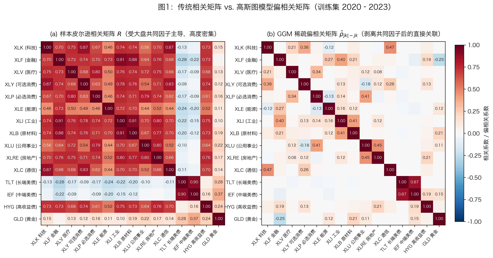
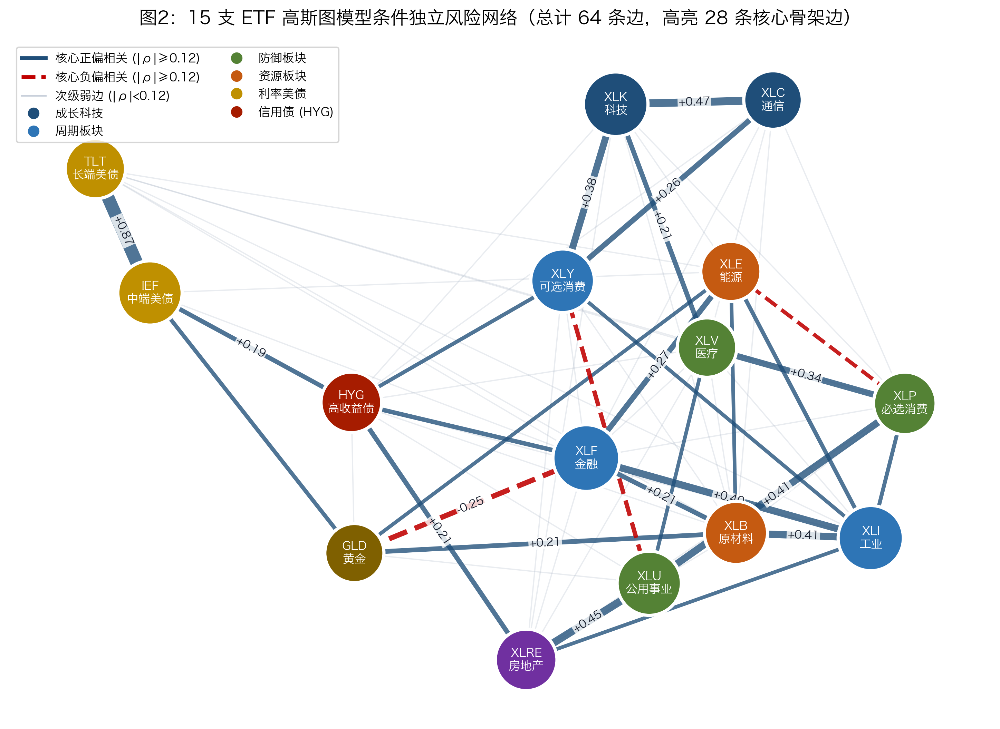
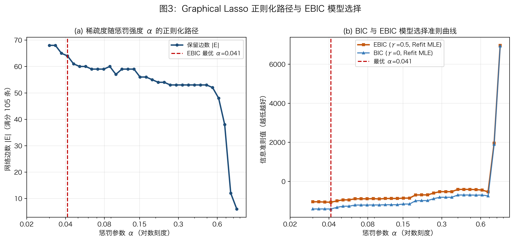
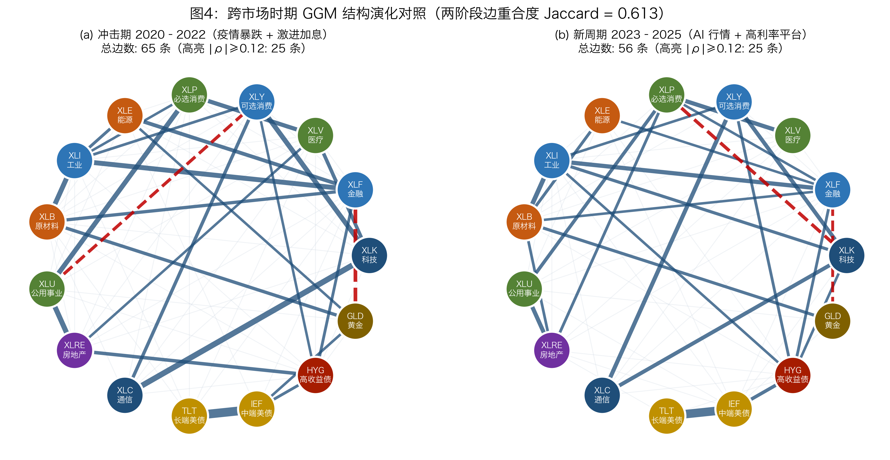
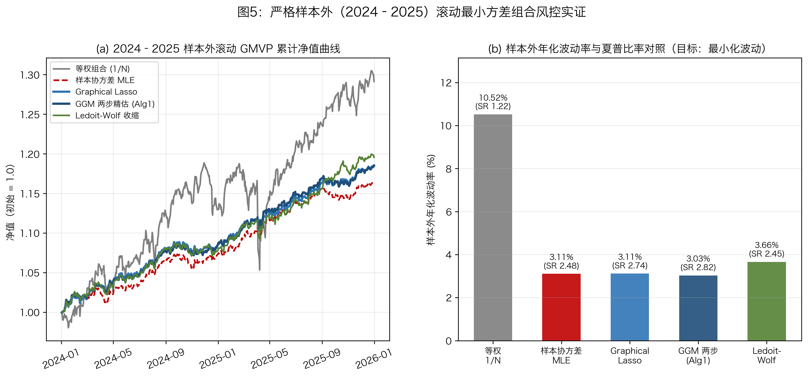
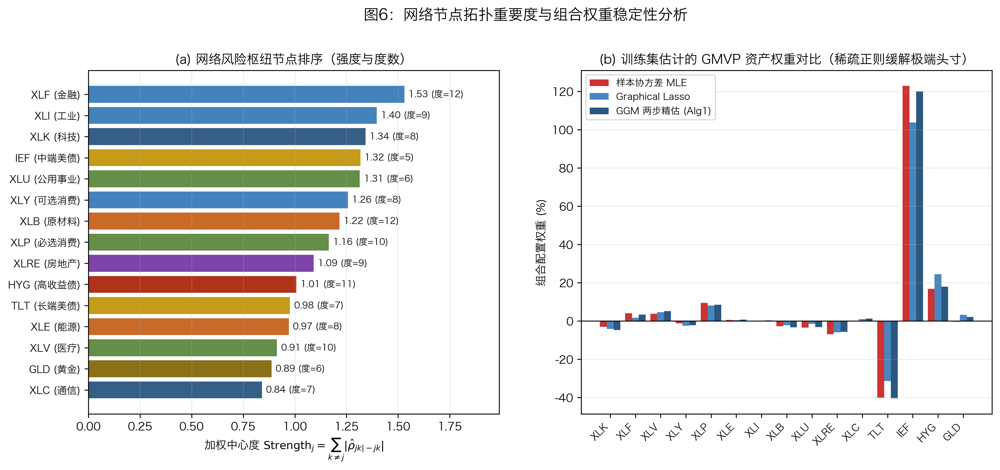

基于 15 支美国行业与跨资产 ETF（2020-01-03 至 2025-12-31，1,507 个交易日）真实数据实证：如何剥离大盘共同因子、串联讲义 5 算法一与算法二识别真实对冲边，并降低样本外组合波动。
共同因子制造虚假全连接，协方差直接求逆放大杠杆噪声——需要既稀疏又稳健的精度矩阵模型
| 资产对 | 皮尔逊相关 | GGM 偏相关 | 风控真实含义 |
|---|---|---|---|
| XLY 可选 / XLU 公用 | +0.541 | -0.176 | 同受大盘拉动，实为进攻/防御轮动对冲 |
| XLF 金融 / GLD 黄金 | +0.030 | -0.251 | 表面看似无关，实为强条件避险替代 |
| XLP 必选 / XLE 能源 | +0.455 | -0.134 | 油价上行直接挤压下游消费品利润空间 |
| XLK 科技 / XLE 能源 | +0.456 | -0.116 | 通胀/能源冲击对长久期科技估值形成压制 |
承接讲义 5 马尔可夫网络条件独立定义，用“L1 选边 + 约束 MLE 去偏”兼顾可解释性与样本外精度
| 估计方法 | 图结构稀疏性 | 参数估计偏差 | 高维稳定性 | 在本研究中的表现与角色 |
|---|---|---|---|---|
| Sample MLE (S−1) | 否（105 条边全连） | 低维无偏 | n/p 小时方差剧增 | 低维测试 NLL 11.562，但无结构解释力且总杠杆偏高 |
| Ledoit-Wolf 线性收缩 | 否（仅压缩特征值） | 引入线性收缩偏差 | 稳定但不可解构 | 行业标准收缩基准，测试 NLL 11.646，样本外波动 3.66% |
| 直接 Graphical Lasso (Alg 2) | 是（L1 自动归零） | 保留边存在向零收缩偏误 | 稳定且降杠杆 | 杠杆最低 (1.92)，但 L1 压缩导致测试 NLL 偏高至 11.860 |
| GGM 两步精估 (Alg 2 + Alg 1) | 是（EBIC 选 64 边） | 算法一约束 MLE 消除偏误 | 严格正定、回撤最低 | 测试 NLL 降至 11.603，滚动波动 3.03%（夏普 2.82）全场最佳 |
把多元正态逆协方差翻译成条件独立边，并用约束极大似然在给定图上精确还原无偏边权
设标准化收益向量 Z = (Z1,…,Zp)T ~ Np(0, Σ)，联合密度为 exp(−½ ZT Θ Z) / const。因子化只含两两变量乘积项，故：
给定标准化样本协方差矩阵 S，多元高斯对数似然函数（忽略常数）为：
L1 惩罚筛选干净骨架，约束 MLE 恢复无偏边权，EBIC 避免模型选入过多虚假噪声边
覆盖 2020 疫情暴跌、2022 激进加息与 2023–2025 高利率 AI 周期，全流程严守零前瞻泄露
| 资产类别 | ETF 代码与中文名 | 风险与宏观属性 | 研究看点 |
|---|---|---|---|
| 成长科技 | XLK (科技)、XLC (通信服务) | 长久期高估值，受无风险利率与 AI 资本开支驱动 | 内部高联动及对高油价/高利率敏感度 |
| 周期与资源 | XLF (金融)、XLY (可选)、XLI (工业)、XLE (能源)、XLB (材料) | 直接反映实体经济景气度、信贷脉冲与大宗通胀 | XLF/XLI 是否构成股市风险核心枢纽 |
| 防御与类债 | XLV (医疗)、XLP (必选)、XLU (公用事业)、XLRE (房地产) | 低 Beta 现金流或高股息、对利率敏感的防御板块 | 剥离市场因子后与进攻板块的替代关系 |
| 固收与避险 | TLT (20Y+ 美债)、IEF (7–10Y 美债)、HYG (高收益债)、GLD (黄金) | 利率曲线长中端、企业信用利差与宏观避险锚 | HYG 是否充当债市向股市传导的信用桥梁 |
扣掉大盘共同因子后，105 条潜在关系有 41 条直接归零，核心产业与利率骨架清晰浮现

| 资产对 | 皮尔逊 | 偏相关 |
|---|---|---|
| TLT / IEF (长短美债) | +0.905 | +0.866 |
| XLK / XLC (科技通信) | +0.868 | +0.472 |
| XLU / XLRE (公用地产) | +0.796 | +0.454 |
| XLI / XLB (工业材料) | +0.913 | +0.411 |
红色虚线揭示剥离大盘后的真实对冲关系，金融 XLF 与高收益债 HYG 处于跨市场传染核心

HYG 拥有 11 条连接、介数中心度 0.165，同时直连中端美债 IEF (+0.19)、金融 XLF (+0.19) 与地产 XLRE (+0.21)，是利率冲击向权益端扩散的关键传导桥梁。
EBIC 稳定选出 64 条边；测试集负对数似然实证证明了算法一去偏重估的关键价值

在 2024–2025 测试集 (n=502) 上计算高斯每观测平均负对数似然（越低代表对未来联合分布刻画越准）：
| 2024–2025 测试集评估模型 (标准化 Z, p=15, n=502) | 保留边数 | 测试集平均 NLL (越低越好) | 统计评价 |
|---|---|---|---|
| Sample MLE (无惩罚全密集基准) | 105 / 105 | 11.562 | 低维 n/p 大时预测似然基准，但无稀疏结构 |
| GGM 两步精估 (Alg 2 选边 + Alg 1 约束 MLE) | 64 / 105 | 11.603 | 兼具 39% 稀疏可解释性与最优级别样本外似然 |
| Ledoit-Wolf 线性收缩估计 | 105 / 105 (稠密) | 11.646 | 特征值收缩损失了部分高相关资产精确拟合度 |
| 直接 Graphical Lasso (未经算法一重估) | 64 / 105 | 11.860 | L1 收缩偏误拉低非零偏相关幅值，似然明显受损 |
冲击期风险传染更稠密（65 边），新周期稀疏化（56 边），46 条核心骨架跨周期稳定复现

两期各自独立重选图结构，所有出现过的 75 条边中有 46 条在两期同时复现，证实 GGM 抓住了长期稳定的产业链与宏观传导骨架，而非短期市场噪音。
将等权组合 10.52% 年化波动压缩至 3.03%，夏普比率提升至 2.82，最大回撤仅 −1.30%

| 滚动 252 日样本外策略 (2024–2025) | 年化收益率 | 年化波动率 | 夏普比率 (rf=0) | 最大回撤 | 累计收益率 | 平均 L1 总杠杆 |
|---|---|---|---|---|---|---|
| 等权组合 (1/N) | 12.84% | 10.52% | 1.22 | -11.38% | 29.14% | 1.00 |
| 样本协方差 MLE | 7.70% | 3.11% | 2.48 | -1.91% | 16.57% | 2.19 |
| Graphical Lasso | 8.53% | 3.11% | 2.74 | -1.36% | 18.53% | 1.92 |
| GGM 两步精估 (Alg1) | 8.53% | 3.03% | 2.82 | -1.30% | 18.51% | 2.11 |
| Ledoit-Wolf 收缩 | 8.97% | 3.66% | 2.45 | -2.10% | 19.55% | 1.77 |
网络中心定位风险传导源，最小方差组合通过“多 IEF + 空 TLT”对冲利率因子，稀疏正则抑制杠杆

| 精度估计策略 | 静态训练拟合 | 滚动 252 日 |
|---|---|---|
| Sample MLE | 2.16 | 2.19 |
| 直接 Graphical Lasso | 1.95 | 1.92 |
| GGM 两步精估 (Alg1) | 2.19 | 2.11 |
显著跑赢等权基准（p<0.001），坦诚低维下相比 Sample MLE 的边界并给出三项实质性改进路径
| 对比基准（基准 − 两步精估） | 波动差值 | 95% 置信区间 | 双侧 p 值 |
|---|---|---|---|
| 等权组合 (1/N) | +7.49% | [+5.19%, +10.50%] | < 0.001 |
| Sample MLE (S−1) | +0.08% | [-0.02%, +0.18%] | 0.122 |
每人 1 分钟以内，讲清“在我的真实场景里用谁当节点、扣掉什么共同因子、解决什么决策痛点”
python3 html_to_pptx.py 即可自动更新高清 PPTX！全部代码、数据与检验结果均已归档可复现，感谢冯项楠老师、吴尚老师与各位同学聆听！